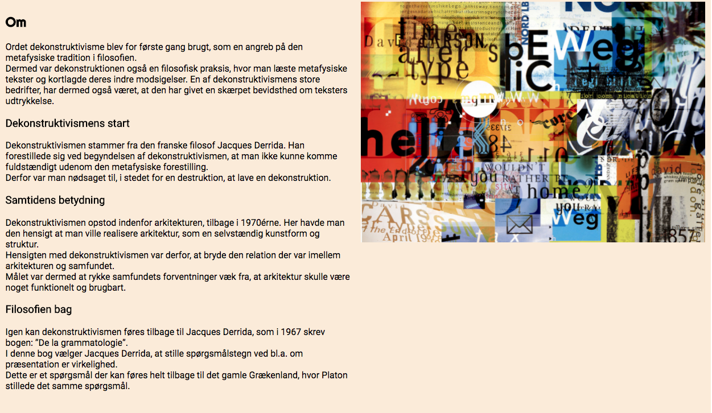

Grundlæggende webdesign:
I dette tema blev vi introduceret til de grundlæggende redskaber indenfor webdesign, vi lærte dermed om brugen af html og CSS og hvordan de hænger sammen. Derudover lærte vi om sleve processen frem til det endelige webdesign, vi blev derfor også introduceret til Adobe CC pakken og især InDesign, som vi lærte at designe vores hjemmeside ud fra. Udover dette lærte vi om de grundlæggende begreber og teori bag både stilarter, farver, kom-position osv. for at skabe den bedst sammenhængende webside.
Dekonstruktivisme
I denne opgave, som var vores første på semesteret, skulle vi udfra en tildelt stilart lave en hjemmeside, der fortalte om dene stilarts histoire, kendetegn osv.
Den stilart som jeg fik tildelt var dekonstruktivisme, som er kendetegnet ved af bryde de generelle regler inden for stilart og går i mod normalen.
Proces:
Moodboard
I løbet af forløbet forløbet, skulle vi som det første lave et moodboard der viste i hvilket retning vi ville gå med vores hjemmesider om vores stilart, og dermed hvad ci ville ligge vægt på.
Det som jeg valgte at der skulle ligges vægt på inde på min hjemmeside, var især Daivd Carsons del af selve dekonstruktivismen og den rolle han spillede.
Derudover valgte jeg at tage stor inspiration fra hans tidlgiere magasin covere og dermed udvælge farver derfra.
Mange af farverne var derfor i den mere vibrante del af farveskalaen og især blå var en faarve der tit endte med at komme tilbage, disse farver blev dog ofte blandet med tydelige kontraster, som fx. de mere jordnære toner.
Template
Da dette var vores første hjemmeside, som vi skulle lave, skulle vi i starten også først lave en template i InDesign, til både computer og mobil version for at kunne skabe et visuelt billede om, hvordan vore hjemmesider gerne i sidste ende skulle ende ud med at vores se ud.
Dette dokument der blev lavet i InDesign var der for en meget præcis kopi af hvad der skulle stå på hjemmesiden og deremd også i hvilken rækkefølge, samt hvilke billeder der skulle være med. Hjemmesiden var derfor et overordnet overblik, der var med til at gøre det nemmer eogmere overskueligt at skulle dele den om i sections da den skulle kodes.
Splasbillede
Efter dette skulle vi lave et splash billede til vores hjemmeside, der skulle kunne vise den stilart vi havde fået udelt.
Dette splashbillede skulle lavet i forskellige str. så det blev tilpasset skræmen ordenligt når man skiftede imellem størrelser. Billede skulle derofr både lavet til Mobil i portrait, desktop, tablet landscape, tablet portrait og mobilt landscape. det var der for både tilpasset til mobil, table tog computer.
Ikonbillede
Samtidig skulle der også lavet et ikon billedet, der vises på computeren, men som ogås skulle laves i forskellige strørrelse, så det var tilpasset til forskellige varianter
Dette billede måte samtidg derfor ikke være hverken for detaljeret el. præcist tegnet da det skulle kunne gå fra at være stort til meget småt, og man dermed stadigvæk skulle kunne se hvad det forestillede. Det ikon jeg derofr valgte i sidste ende at lave var et D der stod for dekonstruktivisme, men som samtidig adskilte sig ved ikke at være et standart d, i det at dekonstruktivismen kendtetegnes ved at være en tid hvor det galt om at være anderledes og gøre noget ingen forvnetede.
Hjemmesiden
01.04.04
Som det sidst i dette forløb skulle hjemmesiden kodes ind, hvor den i den endelige opgave endte med ud fra et udpluk af siden, at se således ud:
